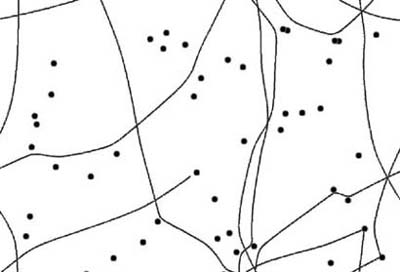

|
|
< Day Day Up > |
|
5.3 Obstacle AvoidanceAs you've probably already realized, we can use the repelling nature of the Lenard-Jones function to our advantage when it comes to dealing with obstacles. In this case, we set the A parameter, the attraction strength, to 0 to leave only the repulsion component. We then can play with the B parameter to adjust the strength of the repulsive force and the m exponent to adjust the attenuation—i.e., the radius of influence of the repulsive force. This effectively enables us to simulate spherical, rigid objects. As the computer-controlled unit approaches one of these objects, a repulsive force develops that forces the unit to steer away from or around the object. Keep in mind that the magnitude of the repulsive force is a function of the separation distance. As the unit approaches the object, the force might be small, causing a rather gradual turn. However, if the unit is very close, the repulsive force will be large, which will force the unit to turn very hard. In AIDemo5-1, we created several randomly placed circular objects in the scene. Then we created a computer-controlled unit and set it in motion along an initially random trajectory. The idea was to see if the unit could avoid all the obstacles. Indeed, the unit did well in avoiding the objects, as illustrated in Figure 5-3. Figure 5-3. Obstacle avoidanceHere, the dark circles represent obstacles, while the swerving lines represent the trails the computer-controlled unit left behind as it navigated the scene. It's clear from this screenshot that the unit makes some gentle turns to avoid objects that are some distance away. Further, it takes some rather abrupt turns when it finds itself in very close proximity to an object. This behavior is very similar to what we achieved in the flocking examples in the previous chapter; however, we achieved the result here by using a very different mechanism. How all this works is conceptually very simple. Each time through the game loop all the objects, stored in an array, are cycled through, and for each object the repulsion force between it and the unit is calculated. For many objects the force is small, as they might be very far from the unit, whereas for others that are close to the unit the force is much larger. All the force contributions are summed, and the net result is applied as a steering force to the unit. These calculations are illustrated in Example 5-3. Example 5-3. Obstacle avoidance
void DoUnitAI(int i)
{
int j;
Vector Fs;
Vector Pfs;
Vector r, u;
double U, A, B, n, m, d;
Fs.x = Fs.y = Fs.z = 0;
Pfs.x = 0;
Pfs.y = Units[i].fLength / 2.0f;
.
.
.
if(Avoid)
{
for(j=0; j<_NUM_OBSTACLES; j++)
{
r = Units[i].vPosition - Obstacles[j];
u = r;
u.Normalize();
A = 0;
B = 13000;
n = 1;
m = 2.5;
d = r.Magnitude()/Units[i].fLength;
U = -A/pow(d, n) + B/pow(d, m);
Fs += VRotate2D( -Units[i].fOrientation,
U * u);
}
}
Units[i].Fa = Fs;
Units[i].Pa = Pfs;
}
The force calculation shown here is essentially the same as the one we used in the chase example; however, in this case the A parameter is set to 0. Also, the force calculation is performed once for each object, thus the force calculation is wrapped in a for loop that traverses the Obstacles array. You need not restrict yourself to circular or spherical obstacles. Although the repulsion force does indeed have a spherical influence, you can effectively use several of these spheres to approximate arbitrarily shaped obstacles. You can line up several of them and place them close to one another to create wall boundaries, and you even can group them using different attenuation and strength settings to approximate virtually any shape. Figure 5-4 shows an example of how to use many small, spherical obstacles to represent a box within which the unit is free to move. Figure 5-4. Boxed inIn this case, we simply took example AIDemo5-1 and distributed the obstacles in a regular fashion to create a box. We used the same algorithm shown in Example 5-3 to keep the unit from leaving the box. The trail shown in Figure 5-4 illustrates the path the unit takes as it moves around the box. Granted, this is a simple example, but it does illustrate how you can approximate nonspherical boundaries. Theoretically, you could distribute several spherical obstacles around a racetrack to create a boundary within which you want a computer-controlled race car to navigate. These boundaries need not be used for the player, but would serve only to guide the computer-controlled unit. You could combine such boundaries with others that only attract, and then place these strategically to cause the computer-controlled unit to be biased toward a certain line or track around the racecourse. This latter technique sort of gets into waypoints, which we'll address later. |
|
|
< Day Day Up > |
|